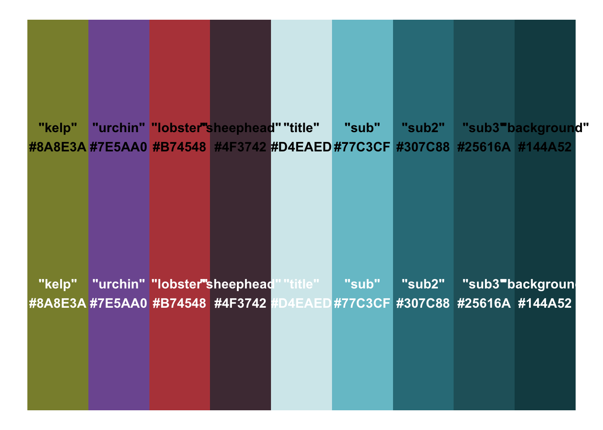
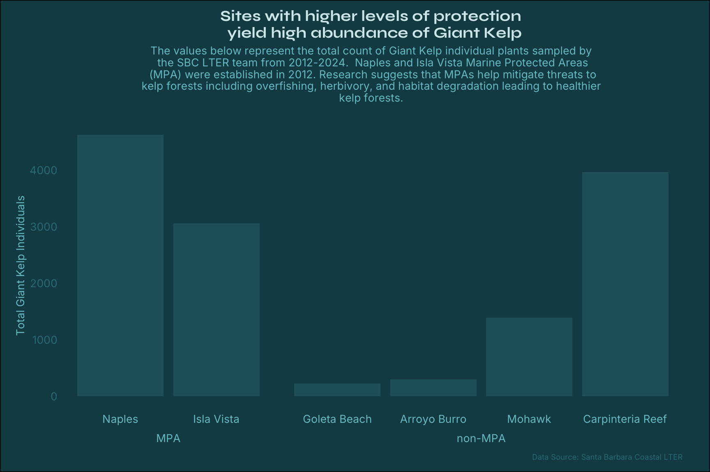
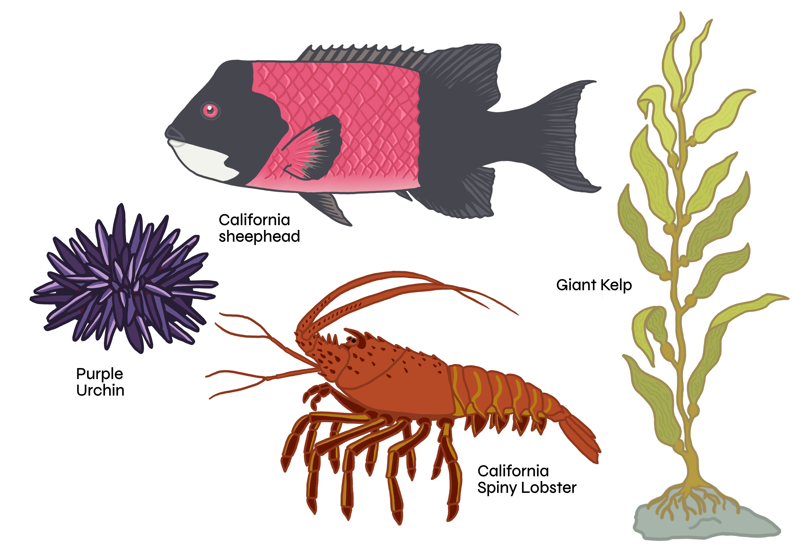
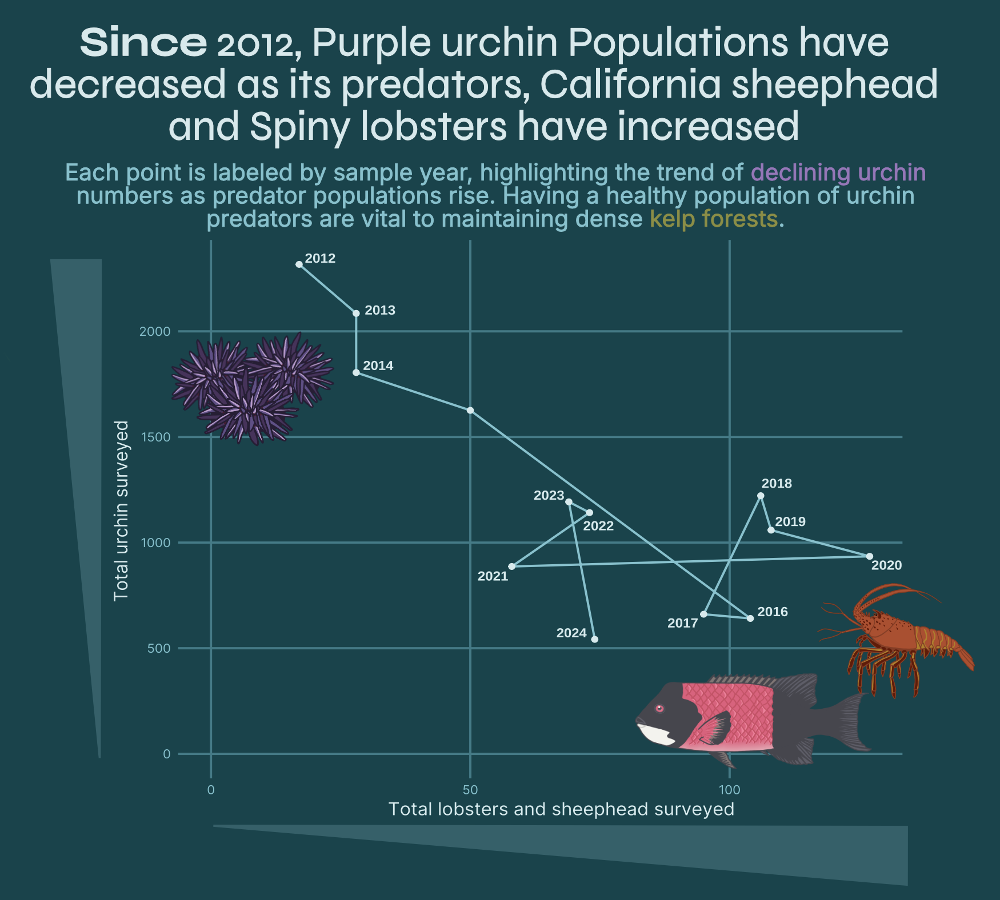

# load libraries
library(tidyverse)
library(showtext)
library(ggrepel)
# ........................Read in SBC LTER datasets............................
kelp_all <- read_csv(here::here('data', 'Annual_Kelp_All_Years_20240823.csv'))
invert_all <- read_csv(here::here('data', 'Annual_Quad_Swath_All_Years_20240823.csv'))
fish_all <- read_csv(here::here('data', 'Annual_fish_comb_20240823.csv'))
species_list <- read_csv(here::here('data', 'SBCLTER_Species_List_Master_20210113.csv'))
#......................Clean data for plots......................
kelp_clean <- kelp_all |>
filter(SITE != "SCDI" & SITE != "SCTW") |>
naniar::replace_with_na(replace = list(FRONDS = -99999)) |>
naniar::replace_with_na(replace = list(HLD_DIAM = -99999)) |>
janitor::clean_names()
# Clean invert data
invert_clean <- invert_all |>
filter(SITE != "SCDI" & SITE != "SCTW") |>
naniar::replace_with_na(replace = list(SIZE = -99999)) |>
janitor::clean_names()
# Clean fish data
fish_clean <- fish_all |>
filter(SITE != "SCDI" & SITE != "SCTW") |>
naniar::replace_with_na(replace = list(SIZE = -99999)) |>
naniar::replace_with_na(replace = list(COUNT = -99999)) |>
janitor::clean_names()
# Purple Urchins
purp_urchin <- invert_clean |>
filter(scientific_name == "Strongylocentrotus purpuratus")
# Spiny lobsters
lobster <- invert_clean |>
filter(scientific_name == "Panulirus interruptus")
# CA sheephead
sheephead <- fish_clean |>
filter(scientific_name == "Semicossyphus pulcher") |>
filter(!is.na(count))
#...........................Load fonts...........................
# Import fonts
font_add_google(name = "Syne", family = "syne")
font_add_google(name = "Inter", family = "inter")Creating a kelp forest ecosystem infographic
Considering graphics and plot types for species abundance data
Project Goal
The goal of this project was to explore the most effective and creative ways to share data. During my time in the data visualization class at Bren, I learned to think more critically about how I design visualizations to ensure they are equitable and accessible to my audience. Factors like plot type, font choice, color schemes, and the ways in which plots are annotated or highlighted are just some of the many considerations that influence how effectively a visualization communicates its message.
For this project, I used long-term survey data from the kelp forests of the Santa Barbara Channel to create an infographic that illustrates the relationship between Giant Kelp, one of its primary grazers, the Purple Urchin, and some of Purple urchins main predators, lobsters and a sheephead fish:

Data
The data used in this project comes from the Santa Barbara Coastal Long-Term Ecological Research database. I chose this data for many reasons, but one of the main reasons is that it’s one of my favorite databases. Compared to other LTER databases, the data from SBC LTER is exceptionally well-organized and clear. The datasets are in tidy format and include many different sampling projects, making it easy to combine and connect datasets in a coherent and meaningful way. Knowing some of the people responsible for collecting this data also deepens my appreciation for its quality.
For this project, I used three datasets from the SBC LTER, covering the period from 2000 to 2024. All three datasets were collected during the late summer and fall months, ensuring consistency across sampling periods. These include:
- Giant Kelp (Macrocystis pyrifera) Abundance Survey: Tracks the density and distribution of giant kelp.
- Invertebrate and Algal Density Survey: Contains data on purple urchins and spiny lobsters.
- Kelp Forest Fish Abundance Survey: Includes information on the California Sheephead.
This data was ideal for my goal of exploring kelp forest ecosystem dynamics in Santa Barbara. The organized and consistent formatting allowed me to seamlessly combine datasets and even analyze species abundances across individual sites. I aimed to create a series of informative and visually engaging plots to help my intended audience—people interested in marine ecology, and specifically kelp forest ecosystems—gain a deeper understanding of some of the key species within the system.
Graphic Considerations
After exploring my data, I decided to develop a graphical theme to create a cohesive and visually appealing infographic. I knew I wanted the colors to reflect the species I was studying, so I used a color eye-drop tool to sample colors directly from images of the four species. From there, I built a complementary background color and selected additional shades to form a cohesive palette for my plots. To appeal to a wider audience and apply a equity and inclusion element to my inforgraphic, I made sure my palette is color blind friendly!
For typography, I used one of my favorite websites, fontpair, to find the perfect combination. I chose Syne Bold for titles because it’s simple to read yet offers a slightly elevated and modern look. For body text, I went with Inter Regular, a versatile sans-serif font specifically designed for screens. This combination gives the infographic a clean and professional aesthetic while ensuring readability within the plot elements. I never would have imagined how difficult but fun it can be to pick font faces!
Palette
kelp_pal <- c("kelp" = "#8A8E3A",
"urchin" = "#7E5AA0",
"lobster" = "#B74548",
"sheephead" = "#4F3742",
"title" = "#D4EAED",
"sub" = "#77C3CF",
"sub2" = "#307C88",
"sub3" = "#25616A",
"background" = "#144A52")
monochromeR::view_palette(kelp_pal)
Making a simple bar chart more appealing
One aspect of the data I wanted to explore was the total abundance of Giant Kelp at a select few sites located along the Santa Barbara shoreline. While the data does include information for all 11 sites, I decided to exclude some of the sites along the channel islands and a few that fell outside a certain range as a means to not overwhelm the audience. I found that he most effective way to display the total Giant Kelp indivdual surveyed at my selected sites was the simple bar chart. It is a great way to easily compare the values across the sites, and I ordered the sites to match up with a map in that the sites are arranged on the x-axis as they appear moving from west to east along the coastline.
Prep data
# Filter kelp data for plot
kelp_bar <- kelp_clean |>
filter(site %in% c('NAPL', 'IVEE', 'GOLB', 'ABUR', 'MOHK', 'CARP')) |>
filter(year >= 2012) |>
group_by(site, year) |>
summarise(total_count = n()) |>
mutate(protection = case_when(
site %in% c("GOLB", "ABUR", "MOHK", "CARP") ~ "non-MPA",
site %in% c("NAPL", "IVEE") ~ "MPA")) |>
mutate(site_name = case_when(site == "GOLB" ~ "Goleta Beach",
site == "ABUR" ~ "Arroyo Burro",
site == "MOHK" ~ "Mohawk",
site == "CARP" ~ "Carpinteria Reef",
site == "NAPL" ~ "Naples",
site == "IVEE" ~ "Isla Vista"))
# Define the custom order
site_order <- c("Naples", "Isla Vista", "Goleta Beach", "Arroyo Burro", "Mohawk", "Carpinteria Reef")
# Convert site_name to a factor with the specified levels
kelp_bar$site_name <- factor(kelp_bar$site_name, levels = site_order)Create plot
#..............Bar plot of kelp abundance per LTER site......................
ggplot(kelp_bar, aes(x = site_name, y = total_count, label = protection)) +
# bar plot separated by protection level
geom_col(fill = kelp_pal["sub3"]) +
facet_grid(~ protection, scales="free", space = "free", switch = "x") +
# labels
labs(x = NULL,
y = "Total Giant Kelp Individuals",
title = "Sites with higher levels of protection \n yield high abundance of Giant Kelp",
subtitle = "The values below represent the total count of Giant Kelp individual plants sampled by \nthe SBC LTER team from 2012-2024. Naples and Isla Vista Marine Protected Areas\n (MPA) were established in 2012. Research suggests that MPAs help mitigate threats to \nkelp forests including overfishing, herbivory, and habitat degradation leading to healthier \n kelp forests.
",
caption = "Data Source: Santa Barbara Coastal LTER") +
# theme elements
theme_minimal () +
theme(
# strip titles
strip.background = element_blank(),
strip.placement = "outside",
# remove grid lines
panel.grid.major = element_blank(),
panel.grid.minor = element_blank(),
# text elements
plot.title = element_text(family = "syne", face = "bold",
size = 14, color = kelp_pal["title"], hjust = 0.5),
plot.subtitle = element_text(family = "inter", size = 10, color = kelp_pal["sub"], hjust = 0.5),
plot.caption = element_text(family = "inter", size = 7, color = kelp_pal["sub2"]),
axis.title.y = element_text(family = "inter", size = 10, color = kelp_pal["sub"]),
axis.text.x = element_text(family = "inter", size = 10, color = kelp_pal["sub"]),
axis.text.y = element_text(family = "inter", size = 10, color = kelp_pal["sub2"]),
strip.text = element_text(family = "inter", face = "bold", size = 10, color = kelp_pal["sub"]),
# panel background color
plot.background = element_rect(fill = kelp_pal["background"]),
# adjust margins
plot.margin = margin(10, 25, 10, 15) # Top, Right, Bottom, Left
)
As a way to make this bar chart look more appealing, I decided to include some graphics of Giant Kelp on top of each bar as a way to make my final inforgraphic more fun! By utilizing Affinity Designer, a graphic design application, and Procreate, an iPad drawing app, I was able to create visualizations for the giant kelp, and was also inspired to draw the rest of my species as well. While I know I probabaly could have used clip art online, this project reopened by love for drawing and I have quickly relearned some old design skills. I enjoy how I was able to customize the drawings to match my overall theme and help bring the viewers in and put them in the environment, especially if they may not have been familiar with each species. Here are the drawings I produced, I am really proud of them!
As a way to make this bar chart more visually appealing, I decided to include graphics of Giant Kelp on top of each bar to add a playful and engaging touch to my final infographic. I created these illustrations using Affinity Designer, a graphic design application, and Procreate, an iPad drawing app. While I could have easily used clip art from the internet, this project has sort of reignited my passion for drawing and gave me an opportunity to revisit and hone some old design skills. Plus, I am starting to learn some new skills in Affinity Designer. It is a such a cool way to further refine your plots that you developed in R as when it is rendered as PDF document, the elements of the plot can be altered in Designer. This is a warning message though as you have to be careful not to completely change up your plots as it can be easy to accidentally change the values or manipulate it in a way that no longer provides truthful results. All that to say if you are careful, it is such a great way to put together a visually appealing plot and is how I assembled by infographic. I’m still learning some aspects of the application, and I’m excited to explore how I can use vectorized drawing. This will help me create images that are crisp and scalable, unlike the pixelated results I sometimes get from drawing in Procreate. It’s something I’m still figuring out, but I’m looking forward to perfecting it!
Inspired by this creative process, I decided to draw the rest of my species as well. I really enjoyed customizing the illustrations to match my overall theme, making the visualizations feel more cohesive and inviting. Plus, adding these hand-drawn elements helps immerse the viewer in the environment—especially for those who might not be familiar with each species.
I’m really proud of how the drawings turned out! Here they are:

Not a typical timeseries plot
After creating my timeseries plot of Purple urchins and Giant Kelp, I knew I wanted to do another plot that explores urchin populations along with their predators, sheephead and lobster, over time. However, I didn’t want to just make another simple timeseries plot. I wanted to push myself to try a different plot that still communicated the same information. That is when I found the connected scatter plot. This plot works by plotting the abundance of one species on one axis against the abundance of the other species to produce a scatter plot. Each plot represent the abundances for the particular species in a given year. You can then connect the points in year order to track the abundaces over time.
At first I was hesitant to include this plot. I feared it was confusing (and it really was before I filtered to a smaller timeframe) and that my audience would not grasp what a particular point on the plot really represented. However, with a bit of trial and error and some advice for my classmates, I decided to go for it. Some elements I included to make it easier to understand was the inclusion of an increasing area bar along each axis that allows one to better visualize that the higher values on each axis equated to higher abundance levels. Additionally, I made the plot caption point out the temporal trend as a means to draw the readers eye to begining looking at the 2012 point on the graph first. I also included my drawings of the species near the axes to reiterate which species were included in this plot. I am still unsure if I like this kind of plot, but I think it was a good challenge.

Final thoughts
I thoroughly enjoyed this project. It’s incredible to see how much progress I’ve made since the beginning of the quarter when this project was first assigned. In such a short amount of time, I’ve noticed a significant improvement in my ability to both create and critique data visualizations. I find myself more critically analyzing graphs and plots, whether in scientific papers, online, or even revisiting some of my past work. I hope to carry what I’ve learned throughout this process into my future work, always striving to create data visualizations that are not only visually appealing but also clear, accurate, and easy to understand!
Data Sources
Kelp Data: SBC LTER: Reef: Kelp Forest Community Dynamics: Abundance and size of Giant Kelp (Macrocystis Pyrifera), ongoing since 2000. https://sbclter.msi.ucsb.edu/data/catalog/package/?package=knb-lter-sbc.18
Invertebrate Data: SBC LTER: Reef: Kelp Forest Community Dynamics: Invertebrate and algal density. https://sbclter.msi.ucsb.edu/data/catalog/package/?package=knb-lter-sbc.19
Fish Data: SBC LTER: Reef: Kelp Forest Community Dynamics: Fish abundance. https://sbclter.msi.ucsb.edu/data/catalog/package/?package=knb-lter-sbc.17